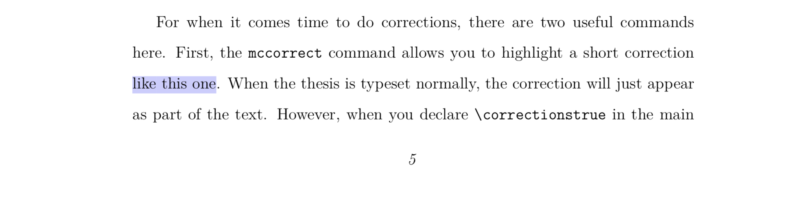
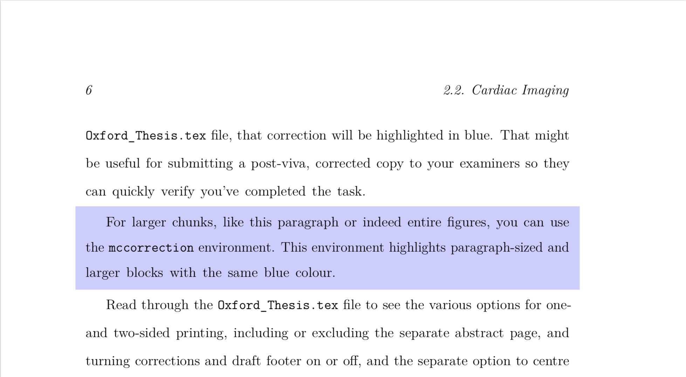
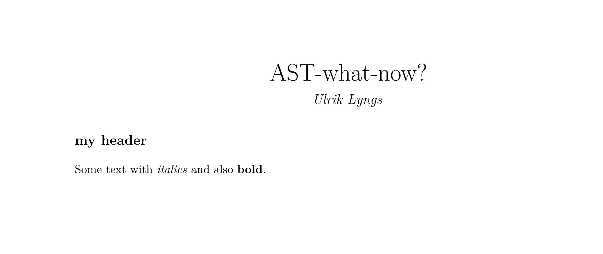
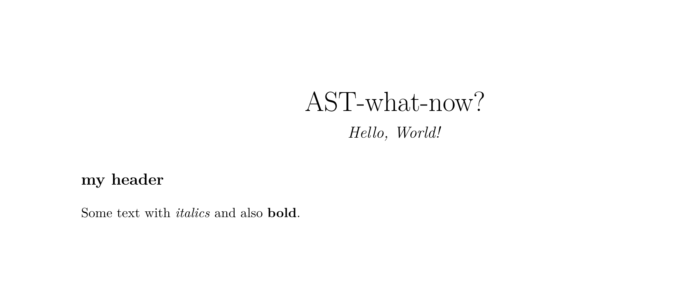
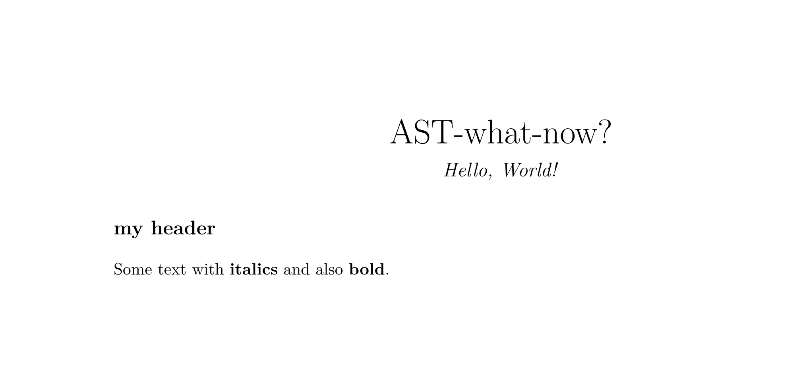
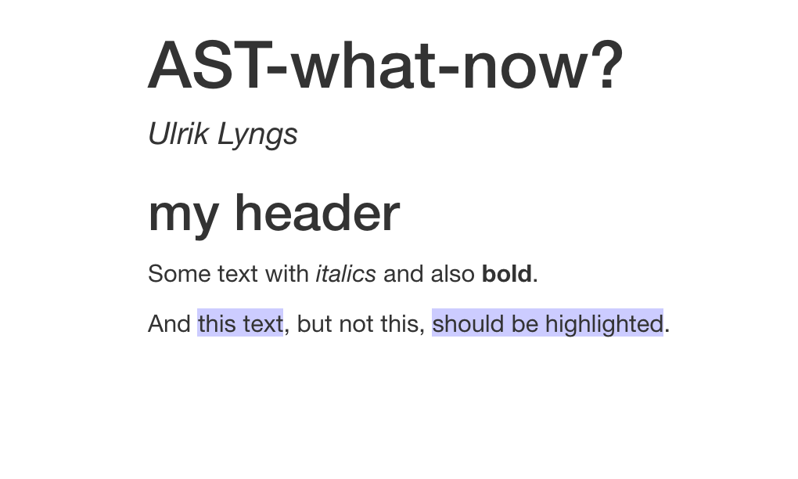

Table of Contents
The problem
I’m developing an R package called oxforddown to write my PhD thesis in R Markdown and format it with the time-tested OxThesis LaTeX template used by many an Oxford grad student.
However, one feature of the OxThesis template just wouldn’t play nicely with R Markdown:
To highlight post-viva corrections, the template has a feature that lets you wrap inline corrections in the LaTeX command \mccorrect{corrected text here} and put longer blocks of corrections in the LaTeX environment \begin{mccorrection} corrected long text here \end{correction}. When doing so, these parts are given a blue background in the resulting PDF:

This feature was difficult to get to work simultaneously for my intended outputs: One of the main points of the oxforddown package is to let you compile your thesis to PDF in the OxThesis template format or to HTML in the ‘gitbook’ format.
For entire chunks of corrections, it was relatively simple. I could use the syntax ```{block type='correction'} in the chunk options to create a custom block. In PDF output, this would put the content between \begin{mccorrection} and \end{mccorrection}; in HTML output, the content would be wrapped in a div with class ‘mccorrection’, as in <div class="correction"> my corrected long text here </div>.
But for inline corrections, it was tricky:
If I used raw LaTeX, it would break the HTML output.
If I used raw HTML, it would break the PDF output.
I experimented with building my own function to apply the appropriate environments to inline corrections, like `r apply_correction(an *italicised* correction)`.
But with this approach, markdown syntax wasn’t rendered correctly: For example, italicised text would in PDF output be rendered literally as ‘an *italicised* correction’.
Sigh.
Finding a solution: The path from .Rmd to output
To solve the problem, I began by reminding myself how R Markdown works under the hood:

Figure 1: Flowchart of the route from .Rmd file to compiled document
knitr executes the code in your R markdown source file (.Rmd) and creates a markdown (.md) file that contains both your text and the rendered results of your code. Then pandoc converts this markdown file into your output format of choice, in my case an OxThesis-formatted PDF or a set of gitbook-formatted HTML files.
So instead of fiddling around at the .Rmd -> .md stage, as I tried at first, why not try at the .md -> .pdf/.html stage? Turns out that’s exactly what ‘pandoc filters’ are for.
What are pandoc filters?
pandoc is an open-source document converter written by John MacFarlane. It converts documents from one format to another by parsing the source file into an ‘abstract syntax tree’ (AST) which is then converted into the target format.
A pandoc filter is a little program (potentially written in any programming language) that does some modification to the AST before the output is created:
INPUT -> pandoc reader -> AST -> filter -> AST -> pandoc writer -> OUTPUTAn Abstract Syntax Tr… What Now?
Imagine you have a simple document called text.Rmd:
---
title: AST-what-now?
author: Ulrik Lyngs
---
## my header
Some text with *italics* and also **bold**.When pandoc reads this, it splits it up into a Meta block containing the stuff in the YAML header (in this case title and author), and a list of Block elements containing the actual content (in this case two blocks, a ‘Header’ and a ‘Para’).
If you’ve got pandoc accessible at the terminal, you can see what this looks like by creating a file named text.Rmd, putting the content above into it, navigating to its location, and then typing in the command pandoc -s -t native test.Rmd:
~ ulyngs$ pandoc -s -t native text.Rmd
Pandoc (Meta {unMeta = fromList [("author",MetaInlines [Str "Ulrik",
Space,Str "Lyngs"]),("title",MetaInlines [Str "AST-what?"])]})
[Header 2 ("my-header",[],[]) [Str "my",Space,Str "header"],
Para [Str "Some",Space,Str "text",Space,Str "with",Space,
Emph [Str "italics"],Space,Str "and",Space,Str "also",Space,
Strong [Str "bold"],Str "."]]Languages with which to write pandoc filters
So basically, a pandoc filter walks through our document’s elements in this form and makes some changes we might want.
The original way to create filters used the functional programming language Haskell. However, as Haskell is not widely known, John MacFarlane also created the python package pandocfilters, and others made the more accessible alternative (still in python) panflute package. Adaptations of the pandocfilters package have been developed for other languages, including JavaScript and R).
A potential problem with these options is that they create new dependencies, for example on a local Python installation, which means that additional stuff besides pandoc is necessary to get them to work.
Since pandoc v2.0, this problem can be bypassed: Now, pandoc has a built-in ability to understand filters written in the lightweight programming language lua (the pandoc executable now includes a lua interpreter and relevant libraries).
tl;dr: pandoc filters written in lua should ‘just work’. Yay, let’s use lua!
Taking lua filters for a spin
First thing to note is that Lua is a bit strange. It supports only a small number of atomic data types, and typical data structures like lists are represented using tables. In fact, tables are Lua’s only native data structure.
With that in mind (which will make sense of the syntax we use to solve the original problem in a minute), let’s try a couple of examples.
Manipulate Metadata from YAML header
Imagine we want to use a pandoc filter to change the author name in the final output of text.Rmd.
First, create an empty text file and save it with the name toy_filter.lua. Then, in text.Rmd’s YAML header, add a line that tells pandoc to use this file as a lua filter:
---
title: AST-what-now?
author: Ulrik Lyngs
output:
pdf_document:
pandoc_args: ["--lua-filter=toy_filter.lua"]
---
## my header
Some text with *italics* and also **bold**.If we leave toy_filter.lua empty and knit text.Rmd, the PDF output is unaltered:

Now let’s use toy_filter.lua as a filter to change the author name to ‘Hello, World!’. The filter should find the YAML metadata in the abstract syntax tree (AST) and manipulate the author, before pandoc goes on to convert it to a .tex file from which a PDF can be built.
To do this, we create a function with the name of the element in the AST we want to manipulate, in this case Meta. This function should manipulate the author and return a modified version:
function Meta(m)
m.author = "Hello, World!"
return m
endIf we save toy_filter.lua and now knit text.Rmd to PDF, this is the result:

Manipulate text formatting
Another silly example: Say we wanted to change italicised text to bold.
First, we look at the documentation for pandoc lua filters. We notice that italicised text passages are parsed by pandoc as Emph inline elements in the AST, and text passages in bold as Strong inline elements.
Then we add this to toy_filter.lua:
function Emph(element)
return pandoc.Strong(element.content)
endNow, when we save toy_filter.lua and knit text.Rmd to PDF, we get this:

Solving the original problem
My problem was how to do inline highlighting of text in both HTML and PDF output.
In the OxThesis LaTeX template this was already possible by wrapping text in a mccorrect command \mccorrect{like this}.
To solve the problem, I needed to use some inline element that pandoc could parse. Turns out pandoc recognises inline span elements.
The solution was therefore quite simple:
In my source document I could wrap inline-text passages I wanted to highlight in a span element, <span>like this</span>. To avoid highlighting all span elements, I would also add a class ‘correction’, as in <span class="correction">like this</span>.
Solving for HTML
When outputting to HTML, highlighting these passages was then simply a matter of styling with CSS: I created a new text file style.css and in it added
.correction {
background-color: #CCCCFF;
}From a document like this…
---
title: AST-what-now?
author: Ulrik Lyngs
output:
html_document:
css: style.css
pdf_document:
pandoc_args: ["--lua-filter=toy_filter.lua"]
---
## my header
Some text with *italics* and also **bold**.
And <span class="correction">this text</span>, but not this,
<span class="correction">should be highlighted</span>.I now got this when outputting to HTML:

Solving for PDF
For PDF output, I needed the lua filter to find Span elements, check if the class was “correction”, and if so wrap the content in the \mccorrect command. This would do the trick:
function Span (el)
if el.classes[1] == "correction" then
table.insert(el.content, 1, pandoc.RawInline('latex', '\\mccorrect{'))
table.insert(el.content, pandoc.RawInline('latex', '}'))
end
return el.content
endIf I included this in toy_filter.lua, knitted text.Rmd to PDF and inspected the intermediary .tex file (add keep_tex: true in your YAML header) I saw that it worked as expected:
Some text with \textbf{italics} and also \textbf{bold}.
And \mccorrect{this text}, but not this, \mccorrect{should be
highlighted}.
\end{document}Hooray!
Conclusion
It can be tricky to figure out how pandoc filters and the lua language work.
When you try making your own filters, you might want to start by playing around with print statements (in the filter above, I tried printing to the console the list of classes assigned to an element with print(table.concat(el.classes,", ")); I also tried printing out true/false as to whether the ‘correction’ class was indeed the first one with print(el.classes[1] == "correction")); etc.).
And of course have a look at the example filters on https://github.com/pandoc/lua-filters and look for examples that resemble what you need.
Good luck!